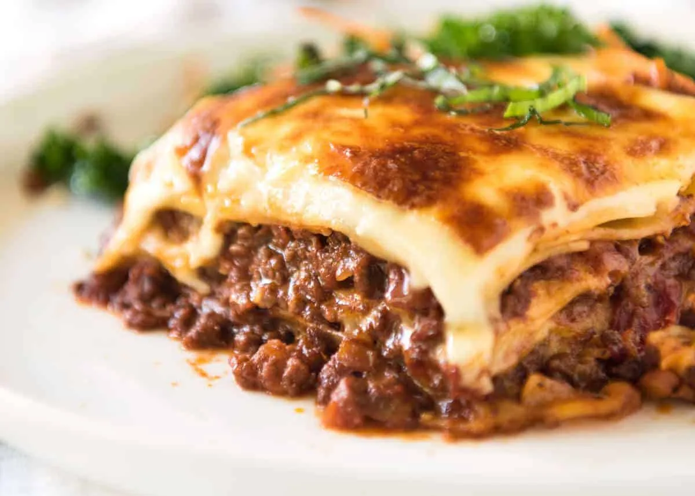

Home
Lasagna Recipe

Description:
This classic lasagna recipe is a hearty and comforting dish made with layers of rich meat sauce, creamy ricotta cheese, and melted mozzarella. Perfect for family dinners or special occasions!
Ingredients:
- 1 lb ground beef
- 1 onion, chopped
- 2 cloves garlic, minced
- 1 can (28 oz) crushed tomatoes
- 2 cans (6 oz each) tomato paste
- 2 cans (15 oz each) tomato sauce
- 1/2 cup water
- 2 tablespoons sugar
- 1 teaspoon dried basil leaves
- 1/2 teaspoon salt
- 1/4 teaspoon ground black pepper
- 4 cups shredded mozzarella cheese
- 1 1/2 cups ricotta cheese
- 1/2 cup grated Parmesan cheese
- 12 lasagna noodles, cooked and drained
Instructions:
- Preheat oven to 375°F (190°C).
- In a large skillet, cook ground beef, onion, and garlic over medium heat until meat is no longer pink; drain excess fat.
- Add crushed tomatoes, tomato paste, tomato sauce, and water. Stir in sugar, basil, salt, and pepper. Simmer for 30 minutes, stirring occasionally.
- In a mixing bowl, combine ricotta cheese, 1 cup of mozzarella cheese, and Parmesan cheese.
- Spread a thin layer of meat sauce in the bottom of a 9x13 inch baking dish. Layer with 4 lasagna noodles, half of the ricotta mixture, one-third of the meat sauce, and one-third of the remaining mozzarella cheese. Repeat layers once more. Top with remaining noodles and meat sauce. Sprinkle with remaining mozzarella cheese.
- Cover with aluminum foil and bake for 25 minutes. Remove foil and bake for an additional 25 minutes or until cheese is bubbly and golden brown.
- Let stand for 10 minutes before serving. Enjoy!